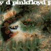
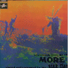
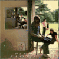
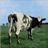
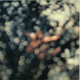
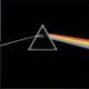
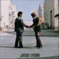
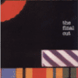
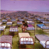

|
The Piper at the Gates of Dawn |
1967 |
11 |
41 min 54 s |
|  |
A Saucerful of Secrets |
1968 |
7 |
39 min 24 s |
|  |
More |
1969 |
13 |
45 min 1 s |
|  |
Ummagumma |
1969 |
16 |
1 h 26 min |
|  |
Atom Heart Mother |
1970 |
5 |
52 min 3 s |
|
Meddle |
1971 |
6 |
41 min 45 s |
|  |
Obscured by Clouds |
1972 |
10 |
40 min 28 s |
|  |
The Dark Side of the Moon |
1973 |
10 |
42 min 53 s |
|  |
Wish You Were Here |
1975 |
5 |
44 min 12 s |
|
Animals |
1977 |
5 |
41 min 41 s |
|
The Wall |
1979 |
26 |
1 h 20 min |
|  |
The Final Cut |
1983 |
13 |
46 min 16 s |
|  |
A Momentary Lapse of Reason |
1987 |
11 |
50 min 59 s |
|
The Division Bell |
1994 |
11 |
1 h 6 min |